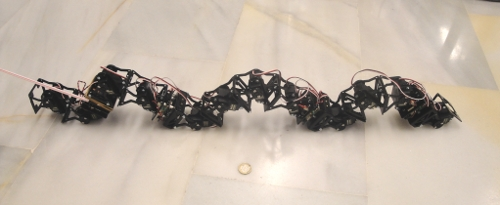
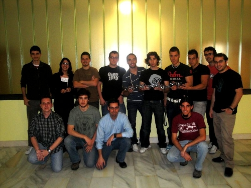

Dentro de la asignatura de Robótica que imparto a estudiantes del grado de Informática en la UC3M, hemos organizado un mini-taller de robots modulares. Se impartió en dos sesiones de 2 y 4 horas los días 7 y 21 de Abril respectivamente.
Las motivaciones para organizar esta actividad fueron:

Durante el taller se hicieron diferentes experimentos de locomoción en una dimensión de robots modulares de 2 módulos (Minicube-I), 3 (Cube3), 6 (Cube6) y finalmente 12 (Cube12). No tuvimos tiempo de montar las configuraciones para 2 dimensiones.
En la página del taller están publicadas las fuentes de los programas así como los vídeos de los diferentes experimentos. Aquí podéis ver una carrera de dos gusanos de 6 módulos:

Y aquí está el gusano de 12 módulos en acción

El taller resultó muy interesante. Estoy deseando hacer uno más grande, con 10 grupos, para ¡montar un gusano de 2.5 metros!